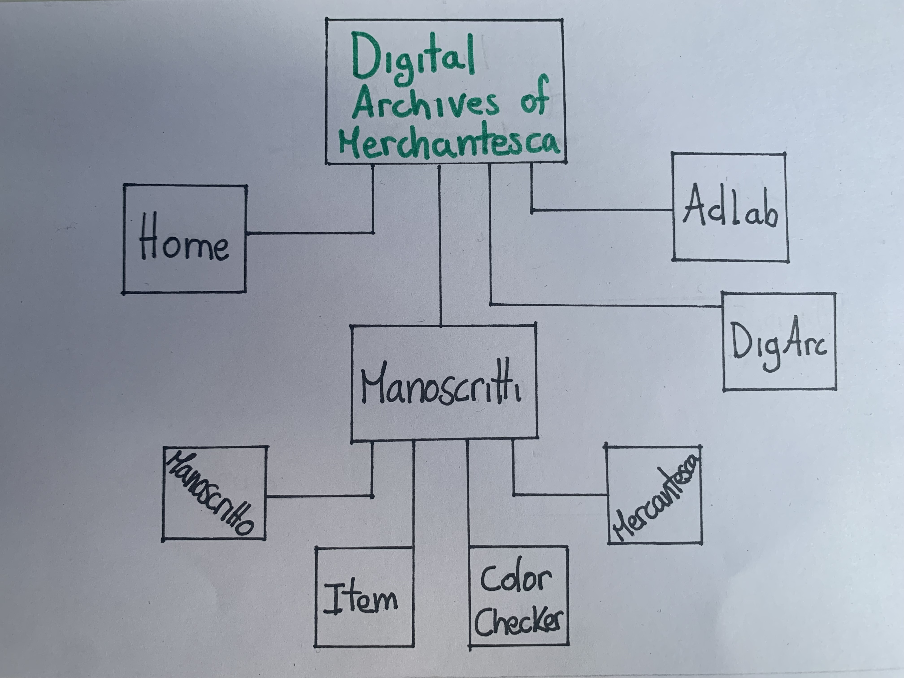
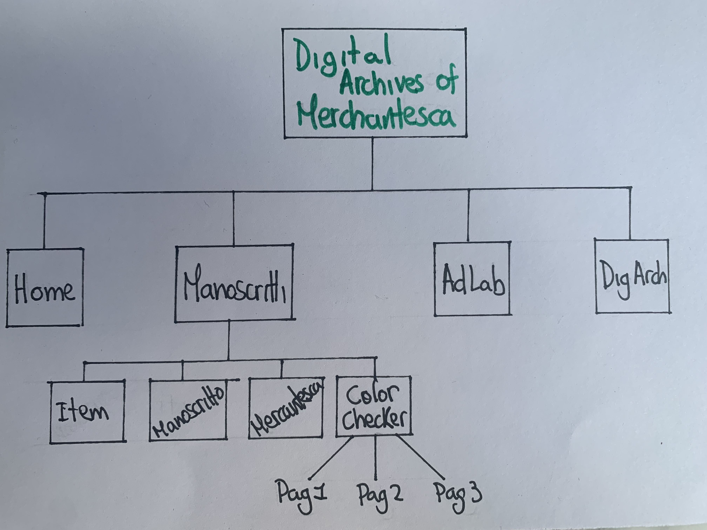
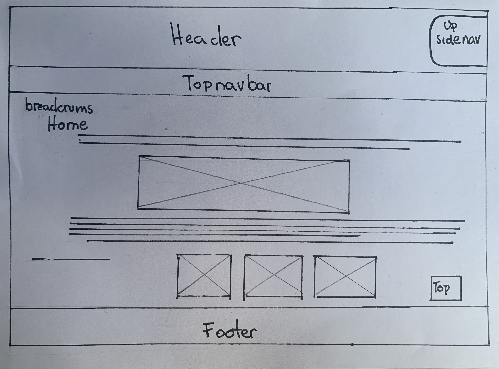
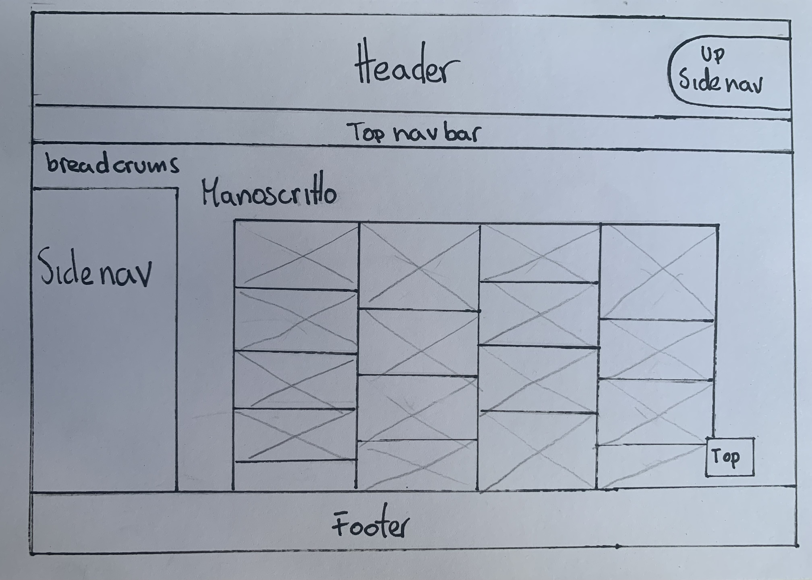
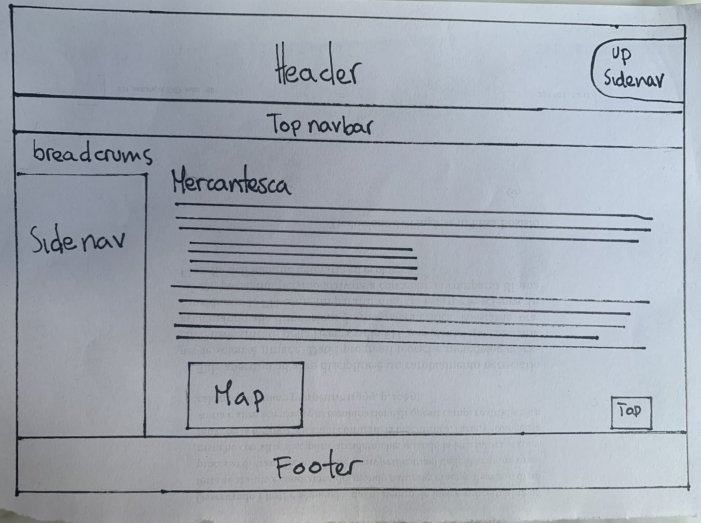
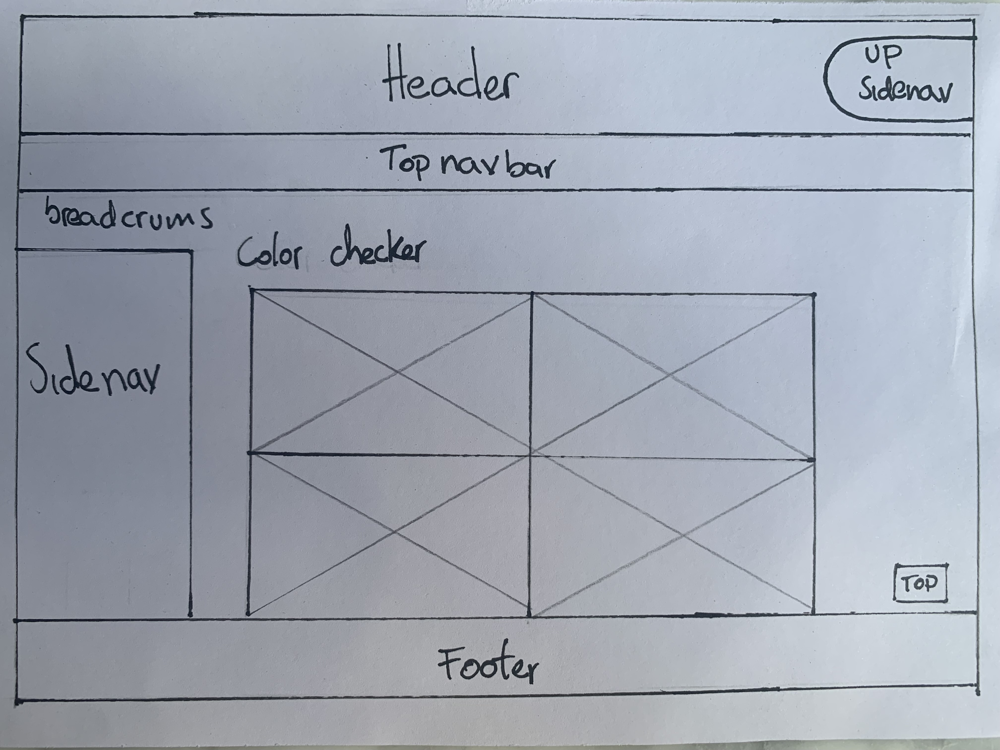
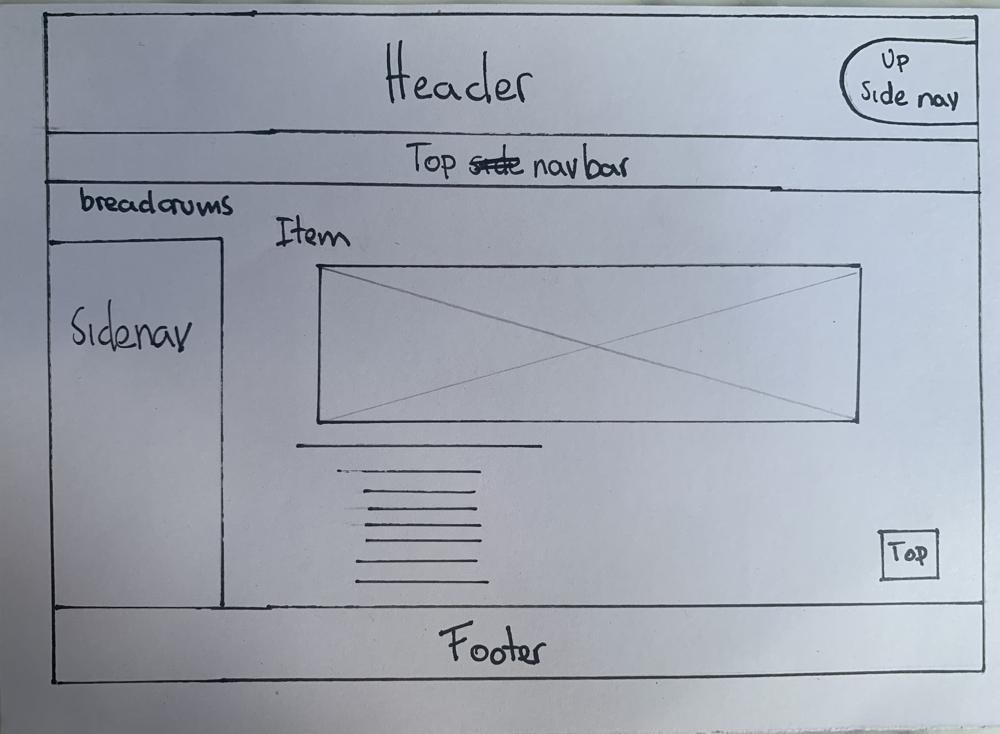
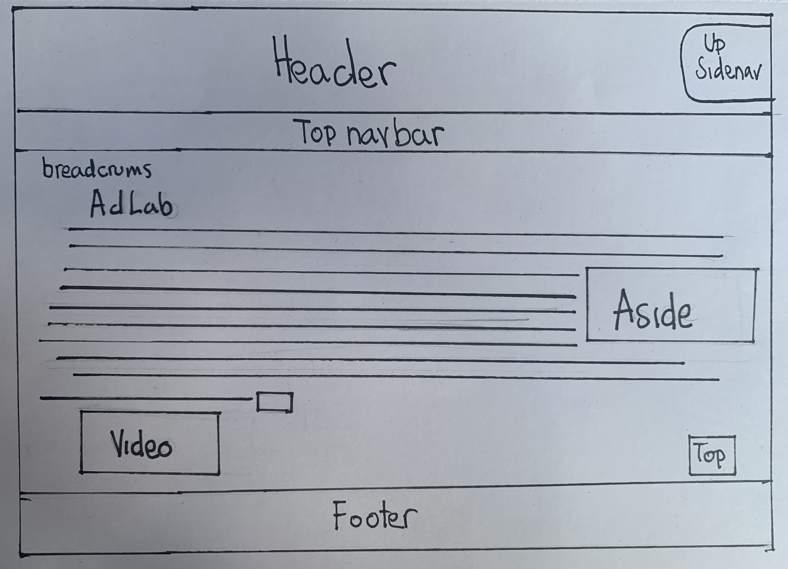
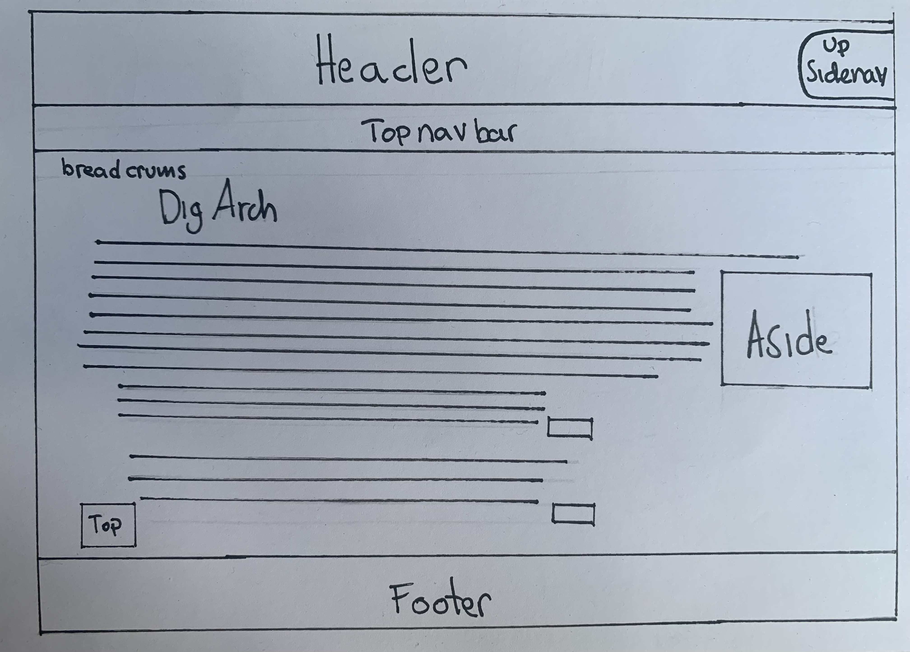

Brief
Obiettivi, finalità, scopo
Il progetto “Digital Archives of Merchantesca” ha come finalità quella di fornire un servizio divulgativo della cultura scritti agli utenti. Nello specifico questo sito offre informazione su manoscritti che non erano stai studiati in precedenza, fornendo informazione sul contenuto e ambiente in cui sono stati prodotti, sfogliabili attraverso diversi percorsi di navigazione; aggiorna i suoi utenti riguardo la digitalizzazione dei manoscritti in un mondo digitale.
Gli obbiettivi principali di questo sito sono quindi quelli di far conoscere dei manoscritti del XV sec attraverso una mostra virtuale, con lo scopo di diffondere la cultura a volte persa negli archivi attraverso le piattaforme virtuale per far che siano raggiungibili a tutti coloro che vogliono sapere di più.
Per far capire agli utenti le potenzialità che ci sono nella digitalizzazione della cultura scritta antica e le nuove proposte che ci sono in un mondo digitale si distinguono vari metodi di navigazione e organizzazione dei manoscritti, e di trovare rapidamente ciò che si sta cercando.
Per garantire ciò, i contenuti dovranno apparire ben organizzati e il design semplice, intuitivo e accattivante. L’idea del sito è stato quello di creare pagine efficaci e che rispettassero la Web Usability. Ho così deciso di usare solamente un colore (Petroleum Blue nella sezione CSS Colors) nelle sue varie sfumature, per rendere la pagina elegante, moderna e per richiamare l'attenzione dell'utente sui fogli di pergamena del manoscritto. Il titolo è stato scelto proprio per far intendere al visitatore che questo sito è un vero e proprio archivio che cataloga il manoscritto preso sotto studio. In futuro, l'auspicio è quello di creare varie sezioni/collezioni, ognuna a più manoscritti che verrano digitalizzati i futuro e incorporare le rispettive informazioni sullo studio fatto dei testi.
Utente tipo
Questo sito fornisce un approfondimento a studenti, studiosi di storia, filologia, paleografia, letteratura, ma anche a qualsiasi che voglia informarsi sulla cultura digitale dei manoscritti. Siano i fogli di pergamena, con le loro descrizioni, che la parte relativa alla digitalizzazioni e archivi digitali potranno essere infatti facilmente fruibili. Le informazioni e le descrizioni sono accessibili a tutti, utilizzano un linguaggio puntuale ma comunque comprensibile sia agli studenti piu giovani che gli studiosi più sperimentati, sia a chi non ha familiarità con questi temi.
Benchmark
Dedicato unicamente a questo manoscritto non esiste sito, dovuto a che fino poco fa è stato ritrovato negli archivi dell’università e sono tra i pochi a studiarlo, perciò vorrei presentare questo progetto per divulgarlo digitalmente. Invece riguardo temi di digitalizzazione e archivi digitali esistono vari come la DigVatLib, e Adlab
References
Per la creazione del layout di questo sito, ho preso spunto da diversi siti web specializzati, in cui le loro biblioteche e archivi digitali sono molto completi e complessi. Siti dove sfogliare e conoscere un libro antico o manoscritto è molto semplice e invitante. Perciò ho deciso di prendere sputo di diversi siti per creare il mio. Non considero che questi siti siano dei competitors perché sono molto ben costruiti e specializzati, anche perché non essendone nessun sito che mostri digitalmente questi manoscritti, non c’è concorrenza.
Del sito DL FICLIT ho ripreso il layout della presentazioni delle diverse collezioni digitali dei fondi che hanno all'interno del sito, perché è molto attraente per l'utente e invita a navigare dentro la biblioteca digitale. Aggiungendola nel mio sito web, anche se io ho soltanto una collezione, ma con la volontà che in futuro ci siano diverse collezioni.
Ho deciso di aggiungere una spiegazione di come nasce l’idea del mio sito, e quali sono gli obiettivi e annettendo collegamenti da altre pagine più specializzate per contestualizzare e far che chiunque che non sia familiarizzato con quello che presentiamo possa capire, questo lo ho preso dalla parte "Progetto" della DL FICLIT dove spiegano gli obiettivi del sito.
Del sito DigVatLib ho ripreso le spiegazioni dei testi, in cui fanno una esposizione generale del testo, riguardo la categoria a cui appartiene dandone una spiegazione sul tipo di testo che illustrano. Perciò io ho fatto questo excursus sulla mercantesca per illustrare come e da dove sorge questo manoscritto. Ho deciso di incorporare le immagini fatte durante la digitalizzazione col Color Checker come lo fa la Vaticana, per rappresentare il tutto il lavoro completo che si fa durante la digitalizzazione.
Struttura
Mappa concettuale

La mappa concettuale rappresenta l’idea che avevo per questo la creazione di questo sito. Dalla mappa emerge subito l’elemento a cui è affidata la massima importanza: il manoscritto in mercantesca. Il manoscritto può essere esplorato tramite diversi canali di navigazione. La Home, Adlab e Digital Archives occupano un posto secondario in tanto “Digital Archives of Mercantesca” nasce come una collezione digitale dei manoscritti, comunque queste pagine arricchiscono e contestualizzando gli utenti che vogliono usufruire del sito.
Il Manoscritto, può essere navigato attraverso la galleria delle imagini, nella pagina Manoscritti, in Mercantesca viene spiegato il contesto della produzione della manoscritto, in Item c’è l’esempio di un frammento del manoscritto con l’informazione che abbiamo di questo, e in Color Cheker trovi tutte le immagini fatte del manoscritto col Color Cheker che puoi scorrere attraverso la pagination.
Mappa delle dipendenze

A partire dalla Home, il nostro utente potrà esplorare quasi tutto il sito, in quanto raccoglie la maggior parte dei link che ci indirizzeranno alle ulteriori pagine del progetto. A livello della Home, l’utente potrà andare nelle diverse pagine attraverso dalla topnavbar, dove troverà le altre tre pagine principali, “Manoscritti”, “Adlab”, “Digital Archives”. Cosi in tutte e quattro le pagine principali si troveranno la topnav per andare alle altre tre pagine, questo è il primo livello di navegazione.
La navigazione secondaria è dentro la pagina dei “Manoscritti” con una sidenav dove si può andare ad altre tre ulteriori pagine che sono specifiche al manoscritto, “Item”, “Color Checker”, “Mercantesca”. Ulteriormente nella pagina Color cheker attraverso la pagination della galleria di immagini trovi le tre pagine dedicate alle immagini col Color Checker.
Categorie
Ogni item presenta gli stessi descrittori, che sono categorie secondo cui ho organizzato e raccolto le opere. Ho utilizzato i seguenti metadati di Dublin Core per la descrizione del mio materiale digitale:
- Titolo dell'opera
- Anno di creazione
- Descrizione dell'opera
- Lingua
- Formato
- Gestione dei diritti
Inoltre ho integrato altre categorie per rendere più dettagliata l’esposizione dell’item:
- Dimensione
- Ubicazione
- Segnatura
- Materiale
Layout

Home
- Header con titolo del sito, e una hoverable sidenav, con i tasti di ricerca, accesso all’login, e abbiamo messo l’opzione di avere la pagina in due lingue aggiuntive.
- Barra di navigazione primaria grazie alla quale posso accedere agli strumenti di browsing primario
- Breadcrumbs che ci fa capire a che punto della struttura del sito ci troviamo
- Sezione Home dove abbiamo fatto una piccola introduzione su cosa potranno gli utenti trovare nel nostro sito
- Sezione Slideshow di immagini, con 6 immagini dei manoscritti, per attirare l’attenzione dei utenti, al fare click sulla prima immagine ti rimanda alla pagina item dove trovi la spiegazione del manoscritto, con le altre immagine ti apre una nuova pagina dove puoi vedere completa l’immagine
- Sezione Collezione dove trovi la collezione principale dei manoscritti in mercantesca, dove facendo clic vai alla galleria delle imagini completa. Trovi altre collezioni che in futuro vorremo incorporare al sito
- Footer con Web Project Plan, copyright, newsletter e metanavigazione

Manoscritti
- Header con titolo del sito, e una hoverable sidenav, con i tasti di ricerca, accesso all’login, e abbiamo messo l’opzione di avere la pagina in due lingue aggiuntive.
- Barra di navigazione primaria grazie alla quale posso accedere agli strumenti di browsing primario
- Breadcrumbs che ci fa capire a che punto della struttura del sito ci troviamo
- Sidenav, uno strumento di browsing integrativo, dove l’utente può approfondire sul manoscritto, con le pagine Manoscritto, Mercantesca, Color checker, Item
- Sezione Main dove si trovano tutte le immagini del manoscritto digitalizzato in una Responsive Image Grid, dove facendo clik in qualsiasi immagine apre una nuova pagina dove puoi vedere bene l’immagine, soltanto la prima immagine ti apre la pagina Item
- Dublin core riguardo i dati del manoscritto
- Footer con Web Project Plan, copyright, newsletter e metanavigazione

Mercantesca
- Header con titolo del sito, e una hoverable sidenav, con i tasti di ricerca, accesso all’login, e abbiamo messo l’opzione di avere la pagina in due lingue aggiuntive.
- Barra di navigazione primaria grazie alla quale posso accedere agli strumenti di browsing primario
- Breadcrumbs che ci fa capire a che punto della struttura del sito ci troviamo
- Sidenav, uno strumento di browsing integrativo, dove l’utente può approfondire sul manoscritto, con le pagine Manoscritto, Mercantesca, Color checker, Item
- Div Main dove si trova tutta l’informazione riguardo la scrittura della mercantesca
- Div mappa ricavata da Google maps
- Footer con Web Project Plan, copyright, newsletter e metanavigazione

Color Cheker (Pag 1, Pag 2, Pag 3)
- Header con titolo del sito, e una hoverable sidenav, con i tasti di ricerca, accesso all’login, e abbiamo messo l’opzione di avere la pagina in due lingue aggiuntive.
- Barra di navigazione primaria grazie alla quale posso accedere agli strumenti di browsing primario
- Breadcrumbs che ci fa capire a che punto della struttura del sito ci troviamo
- Sidenav, uno strumento di browsing integrativo, dove l’utente può approfondire sul manoscritto, con le pagine Manoscritto, Mercantesca, Color checker, Item
- Pagination
- Imagine gallery dove trovi tutte le immagini fatte del manoscritto fatte col color checker
- Pagination
- Footer con Web Project Plan, copyright, newsletter e metanavigazione

Item
- Header con titolo del sito, e una hoverable sidenav, con i tasti di ricerca, accesso all’login, e abbiamo messo l’opzione di avere la pagina in due lingue aggiuntive.
- Barra di navigazione primaria grazie alla quale posso accedere agli strumenti di browsing primario
- Breadcrumbs che ci fa capire a che punto della struttura del sito ci troviamo
- Sidenav, uno strumento di browsing integrativo, dove l’utente può approfondire sul manoscritto, con le pagine Manoscritto, Mercantesca, Color checker, Item
- Immagine del manoscritto
- Informazione del manoscritto
- Footer con Web Project Plan, copyright, newsletter e metanavigazione

Adlab
- Header con titolo del sito, e una hoverable sidenav, con i tasti di ricerca, accesso all’login, e abbiamo messo l’opzione di avere la pagina in due lingue aggiuntive.
- Barra di navigazione primaria grazie alla quale posso accedere agli strumenti di browsing primario
- Breadcrumbs che ci fa capire a che punto della struttura del sito ci troviamo
- Sezione testo Adlab, che è l’informazione riguardo il laboratorio e il lavoro fatto li dove hanno digitalizzato il manoscritto
- Aside che ci mostra una citazione diretta dal sito del laboratorio, di come nasce il sito
- Link, fatto a modo di button di collegato dove porta a una nuova pagina che è quella ufficiale del Adlab
- Video da YouTube del lavoro che si fa in Adlab
- Footer con Web Project Plan, copyright, newsletter e metanavigazione

Digital Archives
- Header con titolo del sito, e una hoverable sidenav, con i tasti di ricerca, accesso all’login, e abbiamo messo l’opzione di avere la pagina in due lingue aggiuntive.
- Barra di navigazione primaria grazie alla quale posso accedere agli strumenti di browsing primario
- Breadcrumbs che ci fa capire a che punto della struttura del sito ci troviamo
- Sezione testo DigArch, dove si trova l’informazione riguardo che cosa sono gli archivi digitali e la digitalizzazione
- Aside che ci mostra una citazione del sito specialistico dando la loro definizioni di archivi digitali
- Due citazioni di due siti diversi, dove abbiamo messo i link, che portanno alle proprie pagine
- Footer con Web Project Plan, copyright, newsletter e metanavigazione
Usabilità
La Web Usability, ovvero la facilità di navigazione del sito, è garantita dai seguenti accorgimenti:
- Header e Navbar e hoverable sidenav rimangono nella stessa posizione al cambiare delle pagine
- Presenza delle briciole di pane
- Contenuti divisi in sezioni facilmente riconoscibili grazie al design
- Uso attributo @alt per le immagini
- Uniformità grafica e stilistica del sito
- Utilizzo di un font adatto (Advent Pro e Arial)
- Canale di navigazione corrente distinto graficamente
- Uso di testi brevi
- Uso di paragrafi, liste e titoli
- Link a altre pagine specializzate
- Aside che permette di dare più informazione
Bibliografia
Per il testo della Mercantesca:
- Cherubini, Paolo, and Alessandro Pratesi. Paleografia Latina L'Avventura Grafica Del Mondo Occidentale. Città del Vaticano: Scuola Vaticana di Paleografia, Diplomatica e Archivistica, 2010. Print.
- Hofmann, Thomas. Catalogazione, Storia Della Scrittura, Storia Del Libro. I Manoscritti Datati D’Italia Vent’Anni Dopo. Quellen und Forschungen aus Italienischen Archiven und Bibliotheken 98.1 (2018): 584���587. Print.
- La Mercantesca(sito DigiVatLib)
Tutte le immagini del Manoscritto sono state digitalizzate da ADlab, (unibo):
- Dipartamento di Filologia, e Italianistica (FICLIT), Alma Mater Studiorum - Università di Bologna, 2023
Le immagini delle collezioni che verrano prodotte: